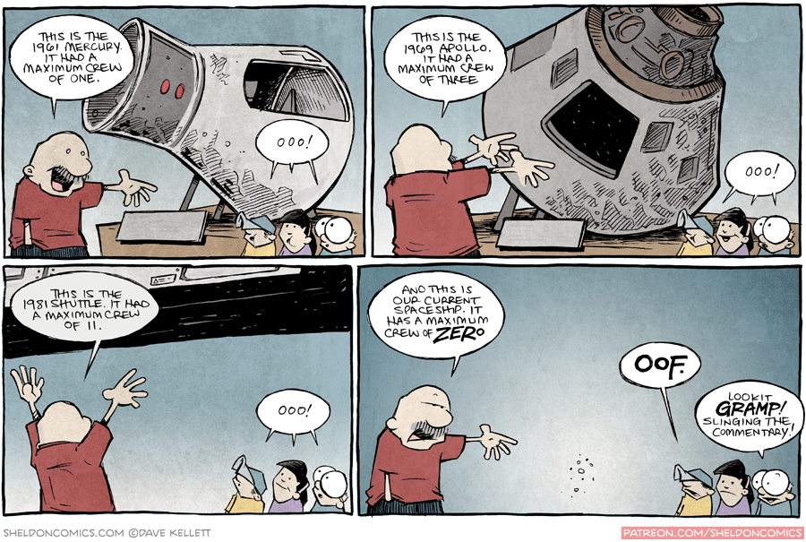
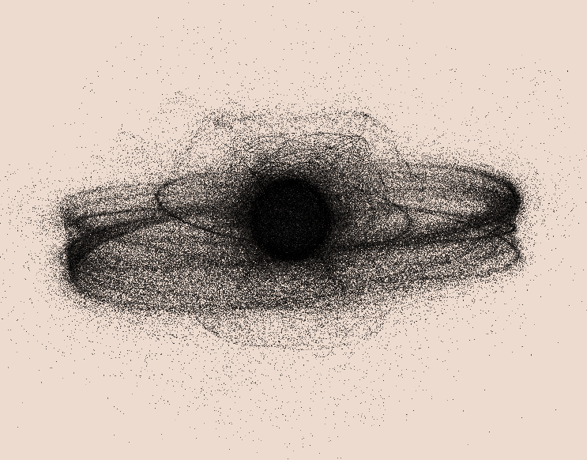
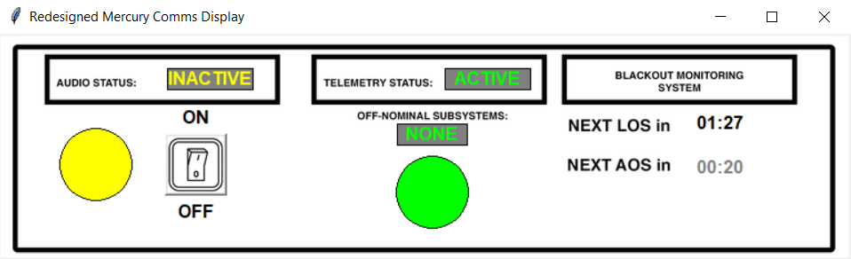

Space
I am a pretty big space fan and I enjoy doing various projects relating to aerospace. I also have a lot of opinions about the commercial aerospace industry specifically, so I guess they might pop up on here once in a while.
Quantum Numerics: N-body simulations and data visualization
Spring 2020 - Spring 2021
During the first year of the pandemic, I had the pleasure of working with the folks over at Quantum Numerics AG in Germany as a Research and Development Intern. There, I had a great time gaining exposure to GPU processing and optimization, physics modeling, and visualization. I especially loved working with DeckGL for the first time, modeling space debris and building a small applet that could host my own visualization of all debris in our atmosphere under 2cm! I cannot share much more than this of course, but here is the picture I created! It was created with a DeckGL Point-Cloud Layer that also was interactive, where you could mouse over the point in order to read information about the piece of debris at that location, if available. Many thanks again to the team at Quantum Numerics AG for the first internship that I have ever had!
I am a Brooke Owens Fellow!
Fall 2020 - Spring 2021
I am so happy to be able to finally announce that I am a Brooke Owens Fellow for the Class of 2021! The application process was unlike anything that I have gone through before, with many essays (and the video on my About page) submitted, multiple interviews with companies and Fellows, and generally much anxiety throughout the entire Fall semester.
My host company is Planet Labs, a company which I have been personally a huge fan of ever since I have gotten into learning about and keeping up with the aerospace industry. The work that is being done on their end, in terms of high-quality satellites, imaging, and processing is among the best in the satellite industry as a whole and I am so excited to be able to go to San Francisco this summer and see what it is all about. I will be working on the Mission Operations team, most likely doing work that I have never done before, and I am looking forward to the learning experience that it will bring.
I am also very grateful for the amazing women and gender minorities that the Brooke Owens Fellowship brings together. Everyone I have met so far is so smart, so kind, and it very much amazes me how many people are out there that enjoy aerospace. Columbia University does not have an Aerospace Engineering degree or track, so outside of the Columbia Space Initiative I do not get to interact with many people who enjoy aerospace as much as I do. I hope that by being surrounded by all of these wonderful people I can learn a bit about what they are doing and about aerospace as a whole!
Redesigned Mercury Comms Display
Fall 2020
As part of the Aerospace Human Factors Engineering course, taught by Prof. Mike Massimino (our resident astronaut and cool guy), our goal for the course was to work on redesigning a subsystem of the Mercury spacecraft. For what it's worth, the Mercury spacecraft was not very-well designed, and technology has advanced in almost every field such that many of the systems they had at the time could be rendered obsolete.
My partner Henry Manelski and I chose to redesign the communications display. Several problems with the initial communications system were that it relied on ground stations for connection (which resulted in frequent blackouts), it did not warn astronauts of approaching losses-of-signal or when they would acquire it, and knowing whether the audio/telemetry sending was on or off was anyone's guess. It was also not clear whether the audio was off due to a scheduled blackout or a system malfunction.
Our solution was to revamp the display to include color-coded indicators for various system states, as well as countdowns until LOS and AOS. The issue of frequent blackouts is solved at a system level, wherein the audio signal connects to geostationary TDRSS satellites which have long been the standard of communication in space.

This space display demo uses tkinter and Pillow. The colors of the indicators are as follows:
As part of our project, we also had to design a human factors-focused experiment in order to test the usability and workload of the system. So, we created Modified Cooper-Harper Scales in order to determine the effectiveness of the system.
If you would like to read more about the initial design and how our analysis went, our final paper can be found here
If you would like to see the Python files and look at our README for the experiment, look here.